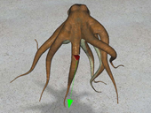
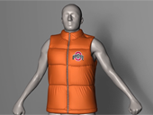
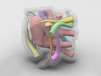

RESEARCH SUMMARY
The fast development of virtual reality and digital manufacturing industries is quickly redefining what computer
graphics is and what computer graphics research should be. In this rapid transition, it is imperative to have
fast and reliable computational tools for real-time simulation and modeling of solids, shells, and fluids.
Toward this goal, I focus my research in four major directions. Below are the papers highlighting my research in each direction. Please click the links to read more.
Here is my full-length
research statement.
Real-time Simulation of Deformable Solids (details here)

Xiaofeng Wu, Rajaditya Mukherjee and Huamin Wang.
2015. A unified approach for subspace simulation of deformable bodies in multiple domains.
ACM Transactions on Graphics (SIGGRAPH Asia), vol. 34, no. 6.
[PDF 2.4MB]
[MP4 in H264, 97MB]
Fast and Accurate Clothing Simulation (details here)
Huamin Wang. 2014. Defending continuous collision detection against errors.
ACM Transactions on Graphics (SIGGRAPH), vol. 33, no. 4, pp. 122:1--122:10.
[PDF 2.0MB]
[Supplemental PDF 0.1MB]
[MP4 in H264, 44MB]
[Code in C++]

Zhili Chen,
Renguo Feng and Huamin Wang.
2013. Modeling friction and air effects between cloth and deformable bodies. ACM Transactions on Graphics (SIGGRAPH), vol. 32, no. 4, pp. 88:1--88:8.
[PDF 6.4MB]
[MP4 in H264, 130MB]
[Friction data in PDF 190KB]
Physics-based Modeling of Printable Shapes (details here)

Miaojun Yao, Zhili Chen, Linjie Luo, Rui Wang and Huamin Wang.
2015. Level-set-based partitioning and packing optimization of a printable model.
ACM Transactions on Graphics (SIGGRAPH Asia), vol. 34, no. 6.
[PDF 2.8MB]
[MP4 in H264, 98MB]
Particle-based Simulation of Fluids and Solids (details here)
Zhili Chen, Byungmoon Kim, Daichi Ito and Huamin Wang.
2015. Wetbrush: GPU-based 3D painting simulation at the bristle level.
ACM Transactions on Graphics (SIGGRAPH Asia), vol. 34, no. 6.
[PDF 14MB]
[MP4 in H264, 95MB]
RESEARCH GRANTS
Huamin Wang. CHS: Small: Printable partitioning of 3D models using level set methods.
National Science Foundation (NSF), 09/2015 - 08/2018, $407,882.
Han-Wei Shen (PI), Gagan Agrawal and Huamin Wang.
Extreme-scale distribution-based data analysis. US Department of Energy (DOE), 09/2014 - 08/2016, $425,000.
Huamin Wang. Individual gifts for supporting research on fluid simulation.
Adobe Research, 02/2014 - current, $56,000.